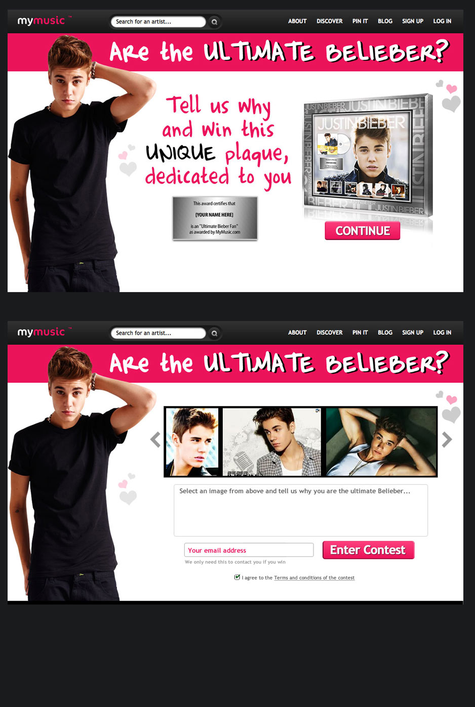

My Music
Client: Freelance
-

- 
A mix tape idea for kids of today
My Music was a vision from three gentleman who all had a common passion for music. The idea behind the site was users could create their own online magazines of their favourite artists using content found on the web and to share these with friends.
I was asked to help update the website including looking at new options for a more dynamic homepage. I have shown you the finished design here but if you want to see all the other versions we worked through and the reasons we eventually decided on this design please down my homepage UI deck.
Another part of the job was to create branding for different sections that the curated content would be stored in. The content was split up into MyMusic featured pages, music genre's and sponsorship pages. You can see some of the designs I came up with including a general look and feel for all My Music banners that used the core brand colours.
Another part of the My Music work was to create landing pages for competitions to encourage users to create some online magazines and share them with friends. Justin Beiber actually sent out a tweet regarding one competition and crashed the website for three hours!